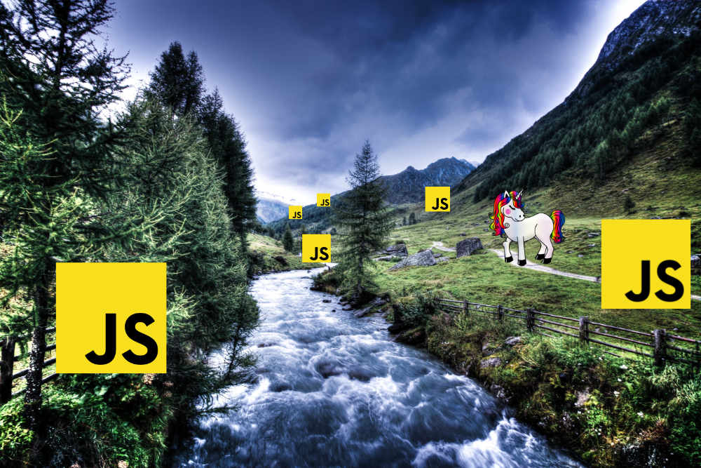
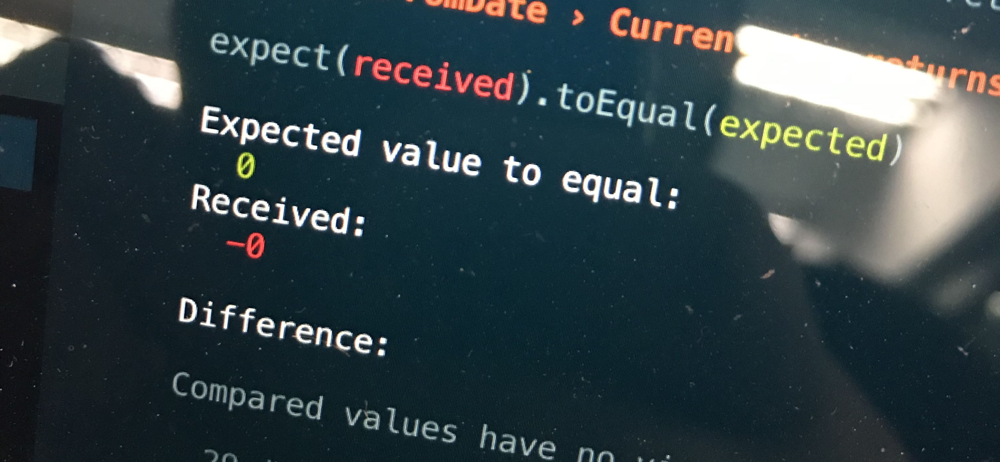

Strumienie i Potoki
w Krajobrazie JavaScript
First day of rewriting our React app from JS to real @typescript. pic.twitter.com/9QjqFFig2F
— Jakub Pusiak 👨💻⚛️📱 (@le_brande) 16 maja 2019

@le_brande
Reactive Programming is an asynchronous programming paradigm concerned with data streams and the propagation of change.
- Wikipedia
Streams - dynamic arrays!
Dlaczego strumienie są optymalne?
Narzędzia do streamów:

Rx - Reactive Extensions
observables
Źródła i źródełka
🤔
Co może być źródłem danych w strumieniach?
- ✅ Array []
- ❌ Object {}
✅ Events
✅ Number
7 - [👏, 👏, 👏, 👏, 👏, 👏, 👏]
5 - [⭐️, ⭐️, ⭐️, ⭐️, ⭐]
3 - [⏭, ⏭, ⏭]
null - []
✅ String
['s', 't', 'r', 'i', 'n', 'g']
- ✅ Promises
- ✅ AJAX requests
- ✅ timeout, interval
- ✅ Redux actions
- ✅ Redux state
- ✅ Components (props)
🏗 Budowle rzeczne
Operatory
Live coding!
Streamy w node.js
const stream = require('stream');
const writeStream = fs.createWriteStream('data.txt');
writeStream.on('error', error => {
console.log({ error });
});
writeStream.write('dupa');
writeStream.end();
Czego próbowałem?
Redux + RxJS = redux-observable


Streams of actions
Redux + Cycles + Most = redux-cycles
Streams of actions
React + RxJS = react-streams

Streams of components (props), events
React + Recompose + RxJS
Streams of props, events
Testowanie streamów
Dlaczego side efekty psują nam strumienie?
[⚪️, ⚪️, ⚪️, ⚪️, ⚪️, ⚪️, ⚪️, ...]
+
🎨 (side effect, np. HTTP request)
=
[⚫️, 🔴, 🔵]
Skąd się biorą te kolory?
const balls = [⚪️, ⚪️, ⚪️, ⚪️, ⚪️, ⚪️, ⚪️];
const ball$ = from(balls).pipe(
take(3),
map(🎨),
map(ball => console.log(ball)),
);
// [⚫️, 🔴, 🔵]
Dependency injection 💉
const balls = [⚪️, ⚪️, ⚪️, ⚪️, ⚪️, ⚪️, ⚪️];
const ballsStreamCreator = (🎨) => from(balls).pipe(
take(3),
map(🎨),
map(ball => console.log(ball)),
);
Polecane źródła wiedzy
- https://rxjs-dev.firebaseapp.com - docs
- https://www.learnrxjs.io/
- egghead.io
- Nexflix developers on Twitter
Koniec!
@le_brande
🙅♂️ 🙆♂ ️🤦♂️
Pokaż dokumentację!